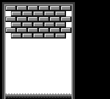

はじめに
このレッスンでは、ゼロから新しいプロジェクトを始めます。Breakout/Arkanoidクローンを作り、「Unbricked」と名付けます！（ただし、あなたのプロジェクトなので、他の名前を付けるのは自由です）。
ターミナルを開いて新しいディレクトリを作り（mkdir unbricked）、"Hello, world!"のときと同じように、その中に入って（cd unbricked）ください。
まず、main.asmというファイルを作成し、hardware.incをコードに含めます。
INCLUDE "hardware.inc"hardware.incは何のためにあるのかと思われるかもしれません。 まあ、私たちが書いたコードはCPUにしか影響しませんが、他のコンソールには何もしません（とにかく、直接には）。 他のコンポーネント（例えばグラフィックシステムなど）とやりとりするには、MMIO（メモリマップドI/O）を使います。基本的に、特定の範囲（アドレス$FF00-FF7F）のメモリはアクセスされると特殊な処理をします。
例えば、「PPUステータス」レジスタは$FF41というアドレスにあります。 このアドレスから読み出すと、グラフィックシステムに関する様々な情報を報告し、書き込むといくつかのパラメータを変更することができます。
しかし、すべての数値（網羅的ではありません）を覚えておくのは非常に面倒です。そこで、hardware.incが活躍します！hardware.incは、これらのレジスタごとに1つの定数（たとえば、前述の「PPUステータス」レジスタにはrSTAT）と、これらのレジスタから読み書きされる値に対するいくつかの追加の定数を定義しています。
rLCDCと LCDCF_ONを使った例を以下に示しますのでご安心ください。
ちなみに、rは「レジスタ」、LCDCFの Fは「フラグ」の略です。
次に、ヘッダーのスペースを確保します。 ヘッダーには、ゲームボーイが頼りにしている情報が格納されていますので、不用意に空けないようにしましょう。
SECTION "Header", ROM0[$100]
jpEntryPoint
ds $150 -@, 0 ; ヘッダのためのスペースを確保する。ヘッダはEntryPointに飛ぶので、今度はそれを書きましょう。
EntryPoint: ; VBlank以外でLCDをOFFにしないWaitVBlank: ld a, [rLY] cp 144 jp c,WaitVBlank
; LCDをOFFにする ld a, 0 ld [rLCDC], a次の数行は「VBlank」まで待ちますが、これは安全に画面を消せる唯一のタイミングです（間違ったタイミングでこれを行うと本物のゲームボーイにダメージを与える可能性があるので、ここは非常に重要です）。 VBlankとは何か、それについてはチュートリアルの後半で詳しく説明します。
画面を消灯することは重要です。画面をつけたまま新しいタイルをロードするのは厄介なので、その方法は第3回で触れます。
Speaking of tiles, we’re going to load some into VRAM next, using the following code:
; Copy the tile data
ld de, Tiles
ld hl, $9000
ld bc, TilesEnd - Tiles
CopyTiles:
ld a, [de]
ld [hli], a
inc de
dec bc
ld a, b
or a, c
jp nz, CopyTiles
This loop might be reminiscent of part Ⅰ.
It copies starting at Tiles to $9000 onwards, which is the part of VRAM where our tiles are going to be stored.
Recall that $9000 is where the data of background tile $00 lies, and the data of subsequent tiles follows right after.
To get the number of bytes to copy, we will do just like in Part Ⅰ: using another label at the end, called TilesEnd, the difference between it (= the address after the last byte of tile data) and Tiles (= the address of the first byte) will be exactly that length.
That said, we haven’t written Tiles nor any of the related data yet.
We’ll get to that later!
Almost done now—next, write another loop, this time for copying the tilemap.
; Copy the tilemap
ld de, Tilemap
ld hl, $9800
ld bc, TilemapEnd - Tilemap
CopyTilemap:
ld a, [de]
ld [hli], a
inc de
dec bc
ld a, b
or a, c
jp nz, CopyTilemap
Note that while this loop’s body is exactly the same as CopyTiles’s, the 3 values loaded into de, hl, and bc are different.
These determine the source, destination, and size of the copy, respectively.
“DRY”
If you think that this is super redundant, you are not wrong, and we will see later how to write actual, reusable functions. But there is more to them than meets the eye, so we will start tackling them much later.
Finally, let’s turn the screen back on, and set a background palette.
Rather than writing the non-descript number %10000001 (or $81 or 129, to taste), we make use of two constants graciously provided by hardware.inc: LCDCF_ON and LCDCF_BGON.
When written to rLCDC, the former causes the PPU and screen to turn back on, and the latter enables the background to be drawn.
(There are other elements that could be drawn, but we are not enabling them yet.)
Combining these constants must be done using |, the binary “or” operator; we’ll see why later.
; Turn the LCD on
ld a, LCDCF_ON | LCDCF_BGON
ld [rLCDC], a
; During the first (blank) frame, initialize display registers
ld a, %11100100
ld [rBGP], a
Done:
jp Done
There’s one last thing we need before we can build the ROM, and that’s the graphics. We will draw the following screen:

In hello-world.asm, tile data had been written out by hand in hexadecimal; this was to let you see how the sausage is made at the lowest level, but boy is it impractical to write!
This time, we will employ a more friendly way, which will let us write each row of pixels more easily.
For each row of pixels, instead of writing the bitplanes directly, we will use a backtick (`) followed by 8 characters.
Each character defines a single pixel, intuitively from left to right; it must be one of 0, 1, 2, and 3, representing the corresponding color index in the palette.
If the character selection isn’t to your liking, you can use RGBASM’s -g option or OPT g to pick others.
For example, rgbasm -g '.xXO' (...) or OPT g.xXO would swap the four characters to ., x, X, and O respectively.
For example:
dw `01230123 ; This is equivalent to `db $55,$33`
You may have noticed that we are using dw instead of db; the difference between these two will be explained later.
We already have tiles made for this project, so you can copy this premade file, and paste it at the end of your code.
Then copy the tilemap from this file, and paste it after the TilesEnd label.
You can build the ROM now, by running the following commands in your terminal:
rgbasm -L -o main.o main.asm
rgblink -o unbricked.gb main.o
rgbfix -v -p 0xFF unbricked.gb
If you run this in your emulator, you should see the following:

That white square seems to be missing! You may have noticed this comment earlier, somewhere in the tile data:
dw `22322232
dw `23232323
dw `33333333
; Paste your logo here:
TilesEnd:
The logo tiles were left intentionally blank so that you can choose your own. You can use one of the following pre-made logos, or try coming up with your own!

Add your chosen logo’s data (click one of the “Source” links above) after the comment, build the game again, and you should see your logo of choice in the bottom-right!